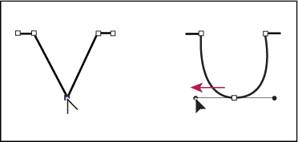
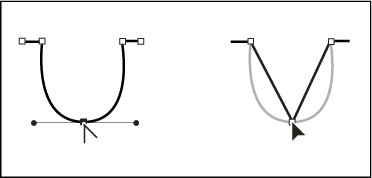
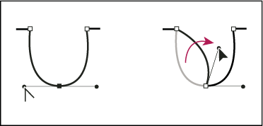

Convert between smooth points and corner points
You can convert the points on a path between corner to smooth points. Using options in the Control panel, you can quickly convert multiple anchor points. Using the Convert Anchor Point tool, you can choose to convert only one side of the point, and you can precisely alter the curve as you convert the point.
 Convert one or more anchor points using the Control panel
Convert one or more anchor points using the Control panel
To use the anchor point conversion options in the Control panel, only relevant anchor points, not the entire object, should be selected. If you select multiple objects, one of the objects must be only partially selected. When entire objects are selected, the Control panel options change to those that affect the entire object.
- To convert one or more corner points to smooth points, select the points and then click the Convert Selected Anchor Points To Smooth button in the Control panel.
- To convert one or more smooth points to corner points, select the points and then click the Convert Selected Anchor Points To Corner button in the Control panel.
Convert an anchor point precisely using the Convert Anchor Point tool
- Select the entire path you want to modify so that you can see its anchor points.
- Select the Convert Anchor Point tool .
- Position the Convert Anchor Point tool over the anchor
point you want to convert, and do one of the following:
-
To convert a corner point to a smooth point, drag a direction point out of the corner point.

Dragging a direction point out of a corner point to create a smooth point
-
To convert a smooth point to a corner point without direction lines, click the smooth point.

Clicking a smooth point to create a corner point
-
To convert a smooth point to a corner point with independent direction lines, drag either direction point.

Converting a smooth point to a corner point
-
To convert a corner point without direction lines to a corner point with independent direction lines, first drag a direction point out of a corner point (making it a smooth point with direction lines). Release the mouse button only (don’t release any keys you may have pressed to activate the Convert Anchor Point tool), and then drag either direction point.
-